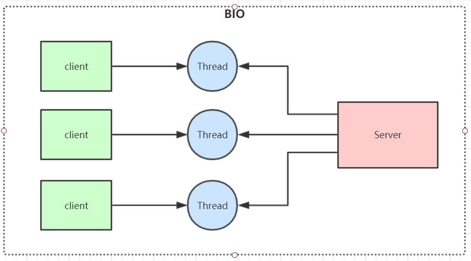
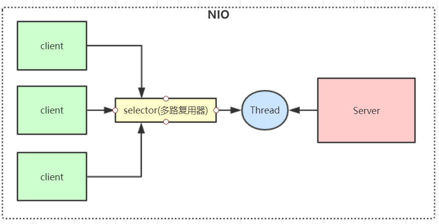
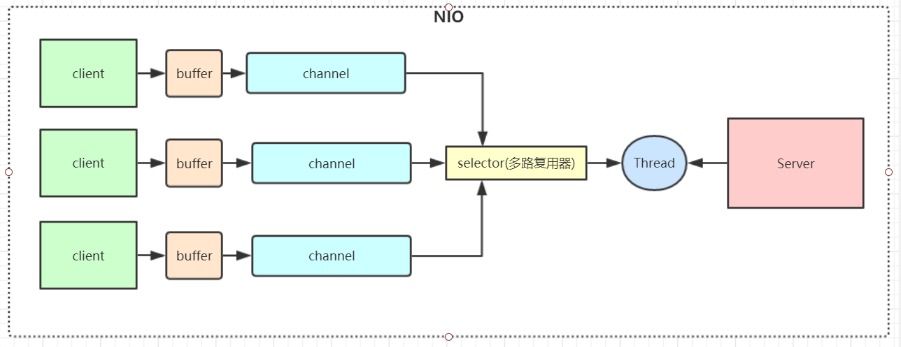
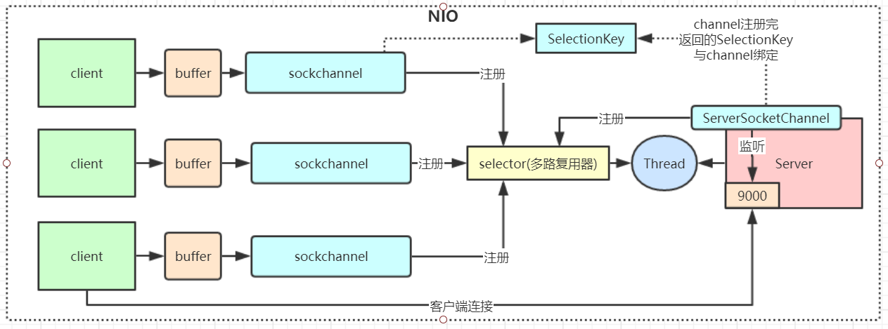
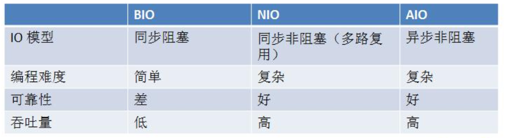

Java BIO & NIO & AIO
IO模型
IO模型就是说用什么样的通道进行数据的发送和接收，Java共支持3种网络编程IO模式：BIO，NIO，AIO
1. BIO(Blocking IO)
同步阻塞模型，一个客户端连接对应一个处理线程
缺点
IO代码里read操作是阻塞操作，如果连接不做数据读写操作会导致线程阻塞，浪费资源
如果线程很多，会导致服务器线程太多，压力太大。
应用场景
BIO 方式适用于连接数目比较小且固定的架构，这种方式对服务器资源要求比较高，但程序简单易理解。

BIO代码示例：
// 服务端示例
public class SocketServer {
public static void main(String[] args) throws IOException {
ServerSocket serverSocket = new ServerSocket(9000);
while (true) {
System.out.println("等待连接。。");
// 阻塞方法
Socket socket = serverSocket.accept();
System.out.println("有客户端连接了。。");
new Thread(new Runnable() {
@Override
public void run() {
try {
handler(socket);
} catch (IOException e) {
e.printStackTrace();
}
}
}).start();
}
}
private static void handler(Socket socket) throws IOException {
System.out.println("thread id = " + Thread.currentThread().getId());
byte[] bytes = new byte[1024];
System.out.println("准备read。。");
// 接收客户端的数据，阻塞方法，没有数据可读时就阻塞
int read = socket.getInputStream().read(bytes);
System.out.println("read完毕。。");
if (read != -1) {
System.out.println("接收到客户端的数据：" + new String(bytes, 0, read));
System.out.println("thread id = " + Thread.currentThread().getId());
}
socket.getOutputStream().write("HelloClient".getBytes());
socket.getOutputStream().flush();
}
}
// 客户端代码
public class SocketClient {
public static void main(String[] args) throws IOException {
Socket socket = new Socket("localhost", 9000);
// 向服务端发送数据
socket.getOutputStream().write("HelloServer".getBytes());
socket.getOutputStream().flush();
System.out.println("向服务端发送数据结束");
byte[] bytes = new byte[1024];
// 接收服务端回传的数据
socket.getInputStream().read(bytes);
System.out.println("接收到服务端的数据：" + new String(bytes));
socket.close();
}
}
2. NIO(Non Blocking IO)
同步非阻塞，服务器实现模式为一个线程可以处理多个请求(连接)，客户端发送的连接请求都会注册到多路复用器selector上，多路复用器轮询到连接有IO请求就进行处理。
I/O多路复用底层一般用的Linux API（select，poll，epoll）来实现，他们的区别如下表：
| select | poll | epoll(jdk 1.5及以上) | |
|---|---|---|---|
| 操作方式 | 遍历 | 遍历 | 回调 |
| 底层实现 | 数组 | 链表 | 哈希表 |
| IO效率 | 每次调用都进行线性遍历，时间复杂度为O(n) | 每次调用都进行线性遍历，时间复杂度为O(n) | 事件通知方式，每当有IO事件就绪，系统注册的回调函数就会被调用，时间复杂度O(1) |
| 最大连接 | 有上限 | 无上限 | 无上限 |
应用场景
NIO方式适用于连接数目多且连接比较短（轻操作） 的架构， 比如聊天服务器， 弹幕系统， 服务器间通讯，编程比较复杂， JDK1.4 开始支持

NIO 有三大核心组件：Channel(通道)，Buffer(缓冲区)，Selector(选择器)

- channel 类似于流，每个 channel 对应一个 buffer缓冲区，buffer 底层就是个数组
- channel 会注册到 selector 上，由 selector 根据 channel 读写事件的发生将其交由某个空闲的线程处理
- selector 可以对应一个或多个线程
- NIO 的 Buffer 和 channel 都是既可以读也可以写
NIO代码示例：
// 服务端代码
public class NIOServer {
// public static ExecutorService pool = Executors.newFixedThreadPool(10);
public static void main(String[] args) throws IOException {
// 创建一个在本地端口进行监听的服务Socket通道.并设置为非阻塞方式
ServerSocketChannel ssc = ServerSocketChannel.open();
// 必须配置为非阻塞才能往selector上注册，否则会报错，selector模式本身就是非阻塞模式
ssc.configureBlocking(false);
ssc.socket().bind(new InetSocketAddress(9000));
// 创建一个选择器selector
Selector selector = Selector.open();
// 把ServerSocketChannel注册到selector上，并且selector对客户端accept连接操作感兴趣
ssc.register(selector, SelectionKey.OP_ACCEPT);
while (true) {
System.out.println("等待事件发生。。");
// 轮询监听channel里的key，select是阻塞的，accept()也是阻塞的
int select = selector.select();
System.out.println("有事件发生了。。");
// 有客户端请求，被轮询监听到
Iterator<SelectionKey> it = selector.selectedKeys().iterator();
while (it.hasNext()) {
SelectionKey key = it.next();
// 删除本次已处理的key，防止下次select重复处理
it.remove();
handle(key);
}
}
}
private static void handle(SelectionKey key) throws IOException {
if (key.isAcceptable()) {
System.out.println("有客户端连接事件发生了。。");
ServerSocketChannel ssc = (ServerSocketChannel) key.channel();
// NIO非阻塞体现：此处accept方法是阻塞的，但是这里因为是发生了连接事件，所以这个方法会马上执行完，不会阻塞
// 处理完连接请求不会继续等待客户端的数据发送
SocketChannel sc = ssc.accept();
sc.configureBlocking(false);
// 通过Selector监听Channel时对读事件感兴趣
sc.register(key.selector(), SelectionKey.OP_READ);
} else if (key.isReadable()) {
System.out.println("有客户端数据可读事件发生了。。");
SocketChannel sc = (SocketChannel) key.channel();
ByteBuffer buffer = ByteBuffer.allocate(1024);
// NIO非阻塞体现:首先read方法不会阻塞，其次这种事件响应模型，当调用到read方法时肯定是发生了客户端发送数据的事件
int len = sc.read(buffer);
if (len != -1) {
System.out.println("读取到客户端发送的数据：" + new String(buffer.array(), 0, len));
}
ByteBuffer bufferToWrite = ByteBuffer.wrap("HelloClient".getBytes());
sc.write(bufferToWrite);
key.interestOps(SelectionKey.OP_READ | SelectionKey.OP_WRITE);
} else if (key.isWritable()) {
SocketChannel sc = (SocketChannel) key.channel();
System.out.println("write事件");
// NIO事件触发是水平触发
// 使用Java的NIO编程的时候，在没有数据可以往外写的时候要取消写事件，
// 在有数据往外写的时候再注册写事件
key.interestOps(SelectionKey.OP_READ);
// sc.close();
}
}
}
NIO服务端程序详细分析
- 创建一个 ServerSocketChannel 和 Selector ，并将 ServerSocketChannel 注册到 Selector 上
- selector 通过 select() 方法监听 channel 事件，当客户端连接时，selector 监听到连接事件， 获取到 ServerSocketChannel 注册时绑定的 selectionKey
- selectionKey 通过 channel() 方法可以获取绑定的 ServerSocketChannel
- ServerSocketChannel 通过 accept() 方法得到 SocketChannel
- 将 SocketChannel 注册到 Selector 上，关心 read 事件
- 注册后返回一个 SelectionKey, 会和该 SocketChannel 关联
- selector 继续通过 select() 方法监听事件，当客户端发送数据给服务端，selector 监听到read事件，获取到 SocketChannel 注册时绑定的 selectionKey
- selectionKey 通过 channel() 方法可以获取绑定的 socketChannel
- 将 socketChannel 里的数据读取出来
- 用 socketChannel 将服务端数据写回客户端
总结：NIO模型的selector 就像一个大总管，负责监听各种IO事件，然后转交给后端线程去处理
NIO相对于BIO非阻塞的体现就在，BIO的后端线程需要阻塞等待客户端写数据(比如read方法)，如果客户端不写数据线程就要阻塞，NIO把等待客户端操作的事情交给了大总管 selector，selector 负责轮询所有已注册的客户端，发现有事件发生了才转交给后端线程处理，后端线程不需要做任何阻塞等待，直接处理客户端事件的数据即可，处理完马上结束，或返回线程池供其他客户端事件继续使用。还有就是 channel 的读写是非阻塞的。
Redis就是典型的NIO线程模型，selector收集所有连接的事件并且转交给后端线程，线程连续执行所有事件命令并将结果写回客户端

// 客户端代码
public class NioClient {
// 通道管理器
private Selector selector;
/**
* 启动客户端测试
*
* @throws IOException
*/
public static void main(String[] args) throws IOException {
NioClient client = new NioClient();
client.initClient("127.0.0.1", 9000);
client.connect();
}
/**
* 获得一个Socket通道，并对该通道做一些初始化的工作
*
* @param ip 连接的服务器的ip
* @param port 连接的服务器的端口号
* @throws IOException
*/
public void initClient(String ip, int port) throws IOException {
// 获得一个Socket通道
SocketChannel channel = SocketChannel.open();
// 设置通道为非阻塞
channel.configureBlocking(false);
// 获得一个通道管理器
this.selector = Selector.open();
// 客户端连接服务器,其实方法执行并没有实现连接，需要在listen（）方法中调
//用channel.finishConnect();才能完成连接
channel.connect(new InetSocketAddress(ip, port));
// 将通道管理器和该通道绑定，并为该通道注册SelectionKey.OP_CONNECT事件。
channel.register(selector, SelectionKey.OP_CONNECT);
}
/**
* 采用轮询的方式监听selector上是否有需要处理的事件，如果有，则进行处理
*
* @throws IOException
*/
public void connect() throws IOException {
// 轮询访问selector
while (true) {
selector.select();
// 获得selector中选中的项的迭代器
Iterator<SelectionKey> it = this.selector.selectedKeys().iterator();
while (it.hasNext()) {
SelectionKey key = (SelectionKey) it.next();
// 删除已选的key,以防重复处理
it.remove();
// 连接事件发生
if (key.isConnectable()) {
SocketChannel channel = (SocketChannel) key.channel();
// 如果正在连接，则完成连接
if (channel.isConnectionPending()) {
channel.finishConnect();
}
// 设置成非阻塞
channel.configureBlocking(false);
// 在这里可以给服务端发送信息哦
ByteBuffer buffer = ByteBuffer.wrap("HelloServer".getBytes());
channel.write(buffer);
// 在和服务端连接成功之后，为了可以接收到服务端的信息，需要给通道设置读的权限。
channel.register(this.selector, SelectionKey.OP_READ); // 获得了可读的事件
} else if (key.isReadable()) {
read(key);
}
}
}
}
/**
* 处理读取服务端发来的信息 的事件
*
* @param key
* @throws IOException
*/
public void read(SelectionKey key) throws IOException {
// 和服务端的read方法一样
// 服务器可读取消息:得到事件发生的Socket通道
SocketChannel channel = (SocketChannel) key.channel();
// 创建读取的缓冲区
ByteBuffer buffer = ByteBuffer.allocate(512);
int len = channel.read(buffer);
if (len != -1) {
System.out.println("客户端收到信息：" + new String(buffer.array(), 0, len));
}
}
}
3. AIO(NIO 2.0)
异步非阻塞，由操作系统完成后回调通知服务端程序启动线程去处理，一般适用于连接数较多且连接时间较长的应用
应用场景
AIO方式适用于连接数目多且连接比较长（重操作） 的架构，JDK7 开始支持
AIO代码示例：
// 服务端代码
public class AIOServer {
public static void main(String[] args) throws Exception {
final AsynchronousServerSocketChannel serverChannel =
AsynchronousServerSocketChannel.open().bind(new InetSocketAddress(9000));
serverChannel.accept(null, new CompletionHandler<AsynchronousSocketChannel, Object>() {
@Override
public void completed(AsynchronousSocketChannel socketChannel, Object attachment) {
try {
// 再此接收客户端连接，如果不写这行代码后面的客户端连接连不上服务端
serverChannel.accept(attachment, this);
System.out.println(socketChannel.getRemoteAddress());
ByteBuffer buffer = ByteBuffer.allocate(1024);
socketChannel.read(buffer, buffer, new CompletionHandler<Integer, ByteBuffer>() {
@Override
public void completed(Integer result, ByteBuffer buffer) {
buffer.flip();
System.out.println(new String(buffer.array(), 0, result));
socketChannel.write(ByteBuffer.wrap("HelloClient".getBytes()));
}
@Override
public void failed(Throwable exc, ByteBuffer buffer) {
exc.printStackTrace();
}
});
} catch (IOException e) {
e.printStackTrace();
}
}
@Override
public void failed(Throwable exc, Object attachment) {
exc.printStackTrace();
}
});
Thread.sleep(Integer.MAX_VALUE);
}
}
// 客户端代码
public class AIOClient {
public static void main(String... args) throws Exception {
AsynchronousSocketChannel socketChannel = AsynchronousSocketChannel.open();
socketChannel.connect(new InetSocketAddress("127.0.0.1", 9000)).get();
socketChannel.write(ByteBuffer.wrap("HelloServer".getBytes()));
ByteBuffer buffer = ByteBuffer.allocate(512);
Integer len = socketChannel.read(buffer).get();
if (len != -1) {
System.out.println("客户端收到信息：" + new String(buffer.array(), 0, len));
}
}
}
4. BIO、 NIO、 AIO 对比

同步异步与阻塞非阻塞（段子）
老张爱喝茶，废话不说，煮开水。
出场人物：老张，水壶两把（普通水壶，简称水壶；会响的水壶，简称响水壶）。
- 老张把水壶放到火上，立等水开。（同步阻塞）
老张觉得自己有点傻
- 老张把水壶放到火上，去客厅看电视，时不时去厨房看看水开没有。（同步非阻塞）
老张还是觉得自己有点傻，于是变高端了，买了把会响笛的那种水壶。水开之后，能大声发出嘀~~~~的噪音。
- 老张把响水壶放到火上，立等水开。（异步阻塞）
老张觉得这样傻等意义不大
- 老张把响水壶放到火上，去客厅看电视，水壶响之前不再去看它了，响了再去拿壶。（异步非阻塞）
老张觉得自己聪明了。
所谓同步异步，只是对于水壶而言。
普通水壶，同步；响水壶，异步。
虽然都能干活，但响水壶可以在自己完工之后，提示老张水开了。这是普通水壶所不能及的。
同步只能让调用者去轮询自己（情况2中），造成老张效率的低下。
所谓阻塞非阻塞，仅仅对于老张而言。
立等的老张，阻塞；看电视的老张，非阻塞。